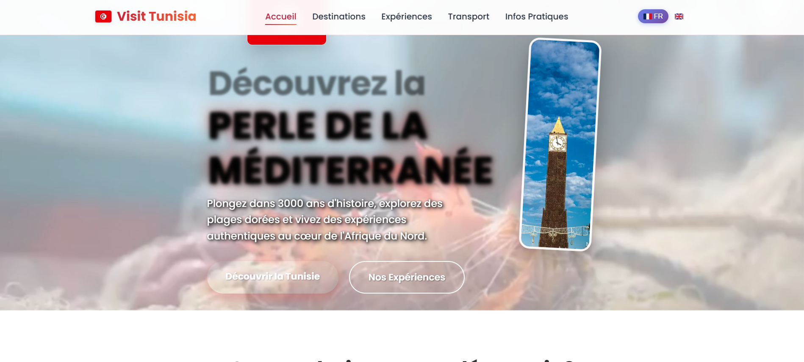
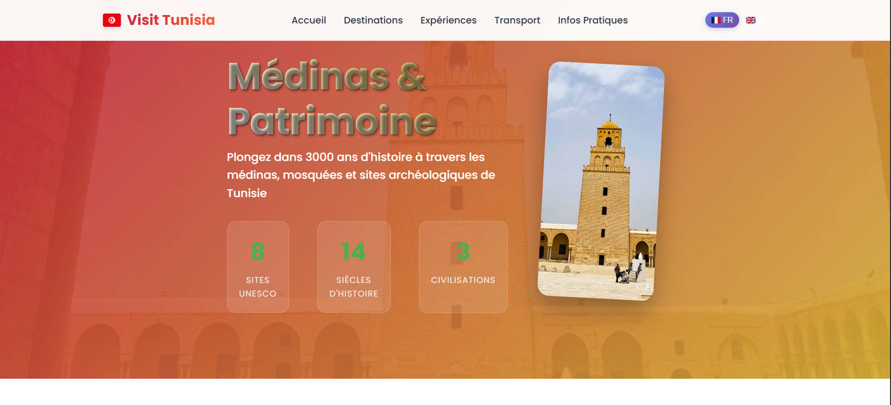

Visit Tunisia
Plateforme web interactive pour découvrir la Tunisie
Visit Tunisia est une plateforme web interactive qui met en valeur la richesse culturelle, historique et naturelle de la Tunisie. Développé avec React et TypeScript, ce site offre une expérience utilisateur immersive pour explorer les destinations touristiques tunisiennes.
Fonctionnalités principales
- Guide interactif des destinations touristiques tunisiennes
- Galeries photos immersives des sites historiques
- Informations pratiques pour les voyageurs
- Guide des transports et moyens de déplacement
- Exploration virtuelle de la médina de Tunis
- Interface responsive adaptée à tous les appareils
- Contenu multimédia avec vidéos et animations
- Expériences authentiques et recommandations locales
Technologies utilisées
- React avec TypeScript
- Design moderne et responsive
- Components réutilisables
- Interface mobile-first
- Optimisation des médias
- Performance optimisée
Sections du site
- Page d'accueil avec présentation générale
- Destinations : Guide des lieux touristiques
- Tunis : Focus sur la capitale
- Médina : Exploration du patrimoine historique
- Transport : Moyens de déplacement
- Expériences : Activités authentiques
- Informations pratiques : Conseils utiles
Vidéo de présentation

